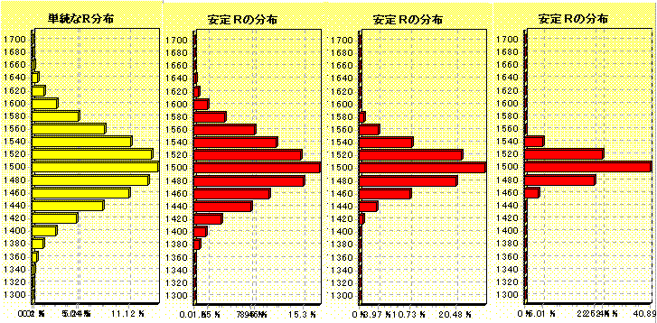

安定Ｒ・保証安定Ｒ（実力）って何ですか？
2001/09/10 とつげき東北
どう使い分けるのですか？：
自分の実力だとどの程度のＲに収束するか知りたい・・・なるべく長期の無作為なデータの安定Ｒを調べる（好調時や不調時の「選り好み」をしてはいけません）。
自分の成績と他人の成績を比較したい・・・良い成績を納めた期間を厳選して、保証最低安定Ｒの値で比較する（試合数や場所に依存せず比較できます）。
自分の実力を知るためには安定Ｒを、他人の成績や、自分の過去の成績と比較したい場合は保証最低安定Ｒを用います。
くわしくは以下をごらんください。
安定Ｒって何ですか？：
安定Ｒとは、「それまでの麻雀の成績が以後も出続けると仮定した時、収束していくＲ値」の理論値です。
もしそれまでの成績と同じ成績をとり続けたなら、みかけのＲはこの値を中心にして増減します。
場所（第一か第二か、他家平均Ｒはいくらか）と試合数（より多い方がより客観的）に依存しますが、自分のＲがどのあたりになるかを予測するために重要な指標です。
たまたまついていた試合結果の安定Ｒを見るのではなく、なるべく客観的な安定Ｒを意識することが重要です。
試合数が異なる場合や、恣意的に好調・不調時を取り出した場合は、安定Ｒでの成績の比較は困難です。
Ａ「安定Ｒって何やねん」
凸「強さの指標やね」
Ａ「東風にはＲがあるやんか」
凸「Ｒは実力の値を示しにくいのね。実力2000の人でも2100越えたり1900切ったり、めっちゃばらつくのね」
Ａ「安定Ｒはばらつかないの？」
凸「もちろんばらつくけど、Ｒに比べたらばらつきが少ないうえ、試合数をこなせばこなすほど精度が上がっていく。Ｒは一定以上精度があがらない」
Ａ「どうやって算出してるの？」
凸「それまでの結果と同じ結果が出続けると仮定した時に、収束していくＲの中心点、つまり<実力>である可能性の最も高い値を算出してる」
Ａ「ほうほう」
凸「式は論文見てくれればわかるよ」
Ａ「でも安定Ｒって、めっちゃ高くなったりして実力を示してるとは思えないねんけど」
凸「少ない試合数やとダメやね。400試合以上、できれば1000試合以上で、ついてる時とか不調の時を故意に入れたり省いたりするとダメやね」
Ａ「それやったらＲでええんちゃうん」
凸「Ｒはもっともっとばらつくよ。何万試合打っても、安定Ｒでの800試合分と同じ程度以上にはばらつく。安定Ｒの方がかなり正確に測れる。ほれ。」
300万試合でのＲの分布 800試合での安定Ｒの分布 2000試合での安定Ｒの分布 5000試合での安定Ｒの分布

Ａ「なるほど・・・自分の実力がどのあたりか知るためには、Ｒよりも安定Ｒで見た方が正確なわけやな」
第一互換安定Ｒ、第二互換安定Ｒって何ですか？：
第一東風荘、第二東風荘の、ルールの違いによる安定Ｒの分布の差を考慮して、安定Ｒを理論的に「第一での値」「第二での値」に変換したものです。
第一の成績と第二の成績（もちろん、それらの混在成績でもかまいません）を比較することができます。
Ａ「どうやって第一と第二を比較できるねん」
凸「その前に、第一と第二、どちらか片方に強い人が流れる要素ある？」
Ａ「まあ東風に初めて接続したら第一に行くやろうから、第二には東風に慣れた人が多く行く気がするけど」
凸「慣れてから第二に行くということは、第二にＲの”流入”がなければおかしいよね。しかし実際、平均Ｒを取るとほとんど一致するねん。つまりあんまりそのような要素はない」
Ａ「ふむ・・・じゃぁまあ、第一や第二のどちらかに、強い人や弱い人が固まったりはしてないんちゃうの？」
凸「となると、第一も第二も実力の分布自体は同じようになるよね。分布が同じであれば、偏差値を取って比較できるわな」
Ａ「ルールが違うやん？ 一概に比較はできないよ」
凸「ルールなんて少々違っても、比較できるわい（笑）。模擬試験の偏差値なんて、問題や出題範囲や配点全て違うけど、大学の合格率とめっちゃ強く相関しとるやろが（笑） 超、一概に比較できるわ」
Ａ「認めにくい」
凸「そんなら安定Ｒも、Ｒも、収支も何もかも認めるなや（笑） 麻雀には強さはない、でええやんけ（笑）」
Ａ「やっぱり実際に打つのとでは違うやん。第一と第二だって違うから比較できない」
凸「お前が統計学をできないだけやろ（笑） だいたい、違うかったら比較できないんやったら、麻雀なんて相手も違えばハウスルールも違う。模擬試験だって問題が違う。何もかも比較できないんかい（笑）」
Ａ「むぅ」
凸「比較できないと言う奴は単に頭が悪いか、比較できてしまうと困るかのいずれかなだけや。私立と国立の偏差値は比較できないから早稲田と山口大の学生のレベルは比較できないとか言ってるのと一緒。一緒なわけあるか」
Ａ「でも山口大にも優秀な人はいるやろ」
凸「しらんがな！！ もっと全体を客観的に見ろや。麻雀でめっちゃ勝ってる人の中にも、たまたま勝ってるだけの下手がおるわい。そんなん言うとったら何もかも比較でけへんわ」
Ａ「だから、比較できないって言ってるやん」
凸「お前山口大と早稲田大同時に合格したらどうすんねん」
Ａ「・・・早稲田いく（照）」
凸「そういうことや。比較できない奴はバカなだけ。一生”偏差値では大学合格率は測れない””偏差値では知性は測れない”とか言ってればいい。この場合、第一と第二が比較できないという主張は前者にあてはまり、東風と実戦は比較できないという主張は後者にあてはまる。少なくとも前者は全くのでたらめだろうが。それに後者は店によってルールが違うから”麻雀に実力は存在しない（知性は存在しない）”と言ってるのと同じことやね。偏差値が低く知性もない者がいかにも言いそうなことだ」
保障安定Ｒ（実力）って何ですか？：
「その成績を記録した時がどんなに好調・不調だったとしても、その人の安定Ｒが現実的にこの範囲内であることが保証される」ような値が、保証安定Ｒです。
非常に好成績を納めた部分だけを取り出して集計することができますが、この場合通常は、成績を客観的に比較することができません。試合数が少なければ少ないほど、実力とかけ離れた安定Ｒを記録しやすくなるからです。
そこで、その試合数でその成績を取るために（現実的な範疇で）必要な安定Ｒを算出したものが保障安定Ｒです。
この指標の最低値を用いて、試合数が少ない結果と、試合数の多い結果で、成績を比較することが可能です。また第一に互換されている場合は第一・第二の差も無視できます。
なるべく多い試合数を重ね、その中で記録した「保障安定Ｒ」の最低値の中でもっとも良い値を取り出してください。その値は、他人のそれと試合数の差や第一・第二の差を考えることなく比較することができます。
Ａ「ようするにどういうことやねん。わかりにくいわ。安定Ｒとどう違うねん」
凸「安定Ｒは、自分の実力を客観的に見たい時に個人的に使う指標やったね」
Ａ「好調の時とか不調の時を故意に取り出したらダメやと言うたな」
凸「そうそう。でもほれ、掲示板とかどっかのＨＰとか行くとさ、調子ええ時だけのデータが貼ってあったりするやろ(笑)」
Ａ「・・・あれ意味ないよな。好調な200試合の安定Ｒとか抜き出したら、おれでも安定2000いくっちゅうねん」
凸「でも<好調時だけを抜き出したりせず、客観的なデータを貼りましょう>て言うても、なかなかそうはいかんしわからんよね」
Ａ「うむ」
凸「さらに、安定Ｒは試合数が少ない方が実力より良い値を記録しやすいやろ」
Ａ「うんうん。20試合とかで安定Ｒ2500とか出たことある」
凸「つまり安定Ｒは、同じ試合数で、しかも同じ程度に好調やった時だけ、まともに比較ができるという指標なんよね」
Ａ「掲示板とかＨＰに載ってるやつでは比較しにくいわけやね」
凸「だからもう、成績が<好調な部分だけを抜き出した>ものと仮定して、その場合にでも絶対これくらい以上の実力はあるよ、てのを表示するのが保証安定Ｒやねん」
Ａ「？」
凸「保証安定Ｒ○○〜××て出るやろ？」
Ａ「出るね」
凸「どんなについてたとしても、安定Ｒ○○以上の実力がないとその成績はまず出せないんよ」
Ａ「ふむ？」
凸「10000試合打った中から一番よかった部分だけを取りだしてるとしても、ほぼ確実に○○だけの実力はあると理論的に言えるということよ」
Ａ「ああ、なるほどね」
凸「だから<良い部分だけ取りだした成績>から、おれの実力は○○以上は絶対ある！ て言えるねん」
Ａ「それやとどんなメリットがあるん？」
凸「異なる試合数の結果とか、掲示板に貼られた<ついてた部分>のデータだけからでも、他人と成績比較ができる」
Ａ「なるほどなあ、○○の値でなら、どんなに好調な部分だけのデータでも、比較していいわけね」
凸「むしろ一番よかったデータで比較すべきやね。<成績の抜き出し>をやってても、その実力以上あるって言うてるねんから」
Ａ「簡単に言うと、いろんな期間で集計してみて、一番良かった○○の値を自分の最低実力と見なしていいわけやね？」
凸「そう。そうやって故意の抜き出しをやっても、最低そんだけ以上の実力がないとその成績は出せないよってこと」
Ａ「保証安定Ｒ○○〜××の、××の方はどうやって使うの？」
凸「そっちは逆に、どんだけ<ついてない部分だけ>取りだした結果であっても、それ以下の実力じゃないとそこまでダメな成績は出ませんよって指標」
Ａ「じゃあ、××よりも確実に実力は下やと言えるわけか」
凸「そうやね」
Ａ「こっちで他人の成績と比較したらダメなん？」
凸「どんな強い人でもたった１試合だけの結果が４位になることはあるやろ。だから、１試合の結果やと××の値はとても大きな値になる」
Ａ「そうかそうか。試合数が増えれば収束していくわけか」
凸「そうそう。色々な期間で集計して出たうち、○○で一番よかった値、××で一番悪かった値、それの間に、自分の実力はあるということよ」
Ａ「××ってあんまり意味なくない？」
凸「いやいや、他人と成績比較する時にさ、自分の○○が他人の××よりももし大きかったなら、もう確実な<実力差>があるって言えるわけよね」
Ａ「そうかそうか」
凸「例えばおれの○○は01/09/18現在で2031なわけね。何があろうとおれはこれ以上の実力はあるよって主張できる」
Ａ「ふむ・・・」
凸「同じように、××の最低値が2000とかの人もいるやろうね。例えば2000試合安定1875くらいを記録した人はね。何があってもその人の実力は2000よりは低いんよ」
Ａ「ふむふむ」
凸「それは麻雀にある偶然性ではない実力差と言えるのね。なぜなら○○とか××は、極端な偶然を仮定した上で理論的に求まった値やからね」
Ａ「ほほ〜〜〜」
凸「成績を比較するという意味では、好調時や不調時を入れないでくださいっていう安定Ｒより、○○の方が試合数とかに依存せず実力比較できるわけよ」
Ａ「成績を比較したい時は安定Ｒよりも保証安定Ｒ○○〜××の、○○の最高記録で比較した方がええんやな？」
凸「うん。ちなみに第一と第二のＲ分布差も吸収してあるから、第一第二が違っても、また試合数が違っても成績比較して良い」
Ａ「なるほど。でもさ○○の値って、自分の安定Ｒよりかなり低く出ない？」
凸「そらそうや。その安定Ｒを記録した時、もっともついてたと仮定して、最低実力を出してるわけやから」
Ａ「そうかそうか。だいたいどれくらい低くなるもんなん？」
凸「試合数によるね。そして計測時にどの程度ついてたかにもよる。まあそのへんまで知りたければ論文読んでくれよ(笑)」
Ａ「それはめんどい(笑)」
凸「これさあ、自分的には安定Ｒよりも優れた<発明？>やねんけど、なんかあんまり反応ないんよね・・・(
ノД`)」
Ａ「わかりにくいねん(笑)」
保障安定Ｒ（実力）は具体的に何を表しますか？：
この値の一般的な意味は、言葉にすると「その試合数でその成績記録することが現実的に不可能ではないための、最低の安定Ｒ」です。安定Ｒ1000の人が100試合の結果で安定Ｒ2000を納めることはまず不可能ですが、安定Ｒ1800の人にならたまには可能でしょう。その、「現実的にギリギリ可能」であるような最低の安定Ｒが、最低保障安定Ｒです。
先ほども書きましたが、次のようにも言えます。「その成績を記録した時がどんなに好調だったとしても、その人の安定Ｒが現実的にこの値以上であることが保証される」ような値が、最低保証安定Ｒです。
安定Ｒは、「たまたまよかった記録」を取り出して比較することにあまり意味のない数値ですが、最低保障安定Ｒは定義上、「たまたまよかった記録」を取り出して比較すべき値です。
今までで一番良かった最低保障安定Ｒが、あなたの持つ最低保障安定Ｒです。
算出方法はできすぎくんマニュアルの「データの説明」または論文「麻雀の成績比較の方法論」に記述してあります。
安定Ｒと普通のＲ値とは、どう違うのですか？：
普通のＲ値は、「Ｒ2000のドヘタ」に書いたように、やり方によっては実力よりずっと高い値にすることもできるし、一時的な好・不調が続いた時に、極端に下がったり上がったりします。だから普通のＲは、よっぽど長期的に見ない限り、「実力」をうまく反映しているとは言いにくいです。安定Ｒだと、自分の牌譜から「できすぎくん」で集計すれば、見かけのＲよりはかなり正確に「実力」を表すことができます。
安定ＲとみかけのＲがすごく離れていて、実力を表しているように見えませんが？：
試合数が少ない段階では、「安定Ｒ」「みかけのＲ」共に、ほとんど信頼できません。また恣意的に、好調時や不調時のデータを見ていると、実力を表すことができません。
しかし、1000試合単位で出た「安定Ｒ」は、みかけのＲよりもずっと正確に実力を表します。
同じ打ち方で打ち続けていれば、きっと「安定Ｒ」のＲ値に近づいていきます。
充分な試合数のキャラのみかけのＲと安定Ｒが違う場合、「安定Ｒは実力を表していない！」のではなくて、逆にみかけのＲの方が実力を表していないわけです。
ある人を見ていると、ずっとＲ1700台後半なのに、安定Ｒは1800だと言っています：
300試合の間、ずっと安定Ｒに到達しなかったり、逆に安定Ｒを切らなかったり、といったことは、麻雀ゲームの偶然性から、たまに起こることです。
ある人の、1000試合の間の最低Ｒが1660、最高Ｒが1860だったからと言って、「実力は1760くらいか？」という判断をするのは短絡的です。実力は1800、ということも充分あり得ることです。
ある期間を取り出した場合に、安定Ｒを中心にＲが上下する（安定Ｒより高いＲである時間と低いＲである時間がほぼ等しい）ことはまれで、恐らく、ほとんど安定Ｒより高いＲにいるか、ほとんど安定Ｒより低いＲにいるかのどちらかであることが圧倒的に多いと考えられます。
これは１次元ランダムウォークという問題に出てくる「逆正弦定理」という数学的な定理を考えると推察されることです。Ｒの変動は、安定Ｒに向かう向心力が働きますのでランダムウォークとは厳密には異なりますが、向心力はあまり大きくなく、充分な試合数を取らない限りランダムウォークに準じると思われます。
一度Ｒが安定Ｒより50上がってしまえば、または下がってしまえば、同じ実力で打っていても、なかなか安定Ｒに戻らないと思われます。故に、「最近この人、いつ見てもＲ2100超えてる」からと言って、その人の実力は2150くらいか、などと判断することは間違っています。
みかけのＲと安定Ｒが離れるのはどういう時ですか？：
１つは、そのキャラが新キャラ系の、1000試合以下のキャラの場合。
みかけのＲの変動自体が大きく、安定Ｒと差が出やすいです。
もう１つは、長い間打ち続けた後に、まとまった不調や好調が来た場合。
10000試合の間安定Ｒ2000でも、ほんの50試合の「絶不調」で、みかけのＲは一気に1900まで下がったりすることもあります。
そして50試合の「絶不調」というのは、しばしば起こることです。
このような場合に、みかけのＲと安定Ｒが離れる傾向にあります。
成績を比較したい時には、保証最低安定Ｒを用いることを推奨します。